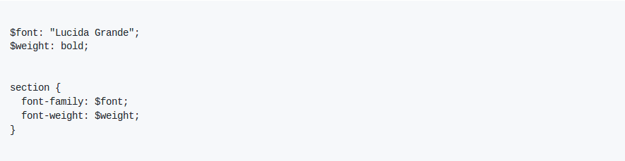

Um dos recursos mais importantes do Sass é a criação de variáveis, as variáveis permitem armazenar informações para reutilizar em todo o estilo.
Variáveis Sass começam com cifrão e são definidas como propriedades CSS:
$bg: #f0f0f3;
Recomenda-se que as variáveis Sass sejam nomeadas com hifens ou underlines. Exemplo: $bg-azul, $bg_azul
Sass suporta 7 tipos de dados principais:
É possível criar variáveis com valores numéricos, os valores podem ser números reais ou inteiros, pode-se colocar unidade ou não.
Exemplo:
Será compilado para:
Da mesma forma que o CSS aceita uma cadeia de caracteres com aspas ("Lucida Grande"), apóstrofo ('Lucida Grande'), ou sem aspas (sans-serif), o Sass também aceita. O tipo de declaração utilizada no Sass aparecerá no CSS resultante.
Exemplo:
Será compilado para:
As cores podem ser atribuídas à variáveis da mesma forma que são declaradas no CSS, o Sass aceita hexadecimais, rgb, rgba e as cores padrão.
Exemplo:
Será compilado para:
Podem ser criadas variáveis booleanas com os valores true ou false. Também é possível criar uma variável vazia atribuindo a ela o valor null.
Estes tipos de dados não são utilizados diretamente no CSS, logo estas variáveis geralmente são utilizadas em funções e mixins do Sass, conteúdo que será visto mais a frente.
Exemplo:
As listas são a forma como Sass representa os valores de algumas declarações CSS como margin: 10px 15px 0 0 ou font-face: Helvetica, Arial, sans-serif. As listas são apenas uma série de valores, separados por espaços ou vírgulas.
Por conta própria as listas não tem tanta utilidade, mas unindo com funções Sass podem se tornar úteis. A directiva @each (será vista mais adiante) pode adicionar estilos para cada item em uma lista. Existem algumas funções para manipular listas como a função nth function que pode acessar itens em uma lista, a função join que junta múltiplas listas e a função append que adiciona itens a listas.
As listas podem ser separadas por vírgulas ou por espaços.
Exemplo:
As listas são muito interessantes, porém se limitam a uma dimensão, por esta razão existem os maps que adicionam dimensões às listas, os maps podem ser comparados aos arrays em linguagens de programação, pois sempre estão ligadas à associação entre chaves e valores.
Ao contrário de listas, maps devem sempre estar entre parênteses e separados por vírgulas. As chaves e valores nos maps podem ser qualquer objeto Sass. Um map só pode ter um valor associado a uma determinada chave (esse valor pode ser uma lista), um valor pode ser associado com várias chaves
Assim como as listas, maps são na sua maioria manipulados usando funções Sass. A função map-get acessa os valores em um map e a função de map-merge adiciona valores a um map. A directiva @each pode ser usada para adicionar estilos para cada par chave/valor em um mapa.
Os maps não podem ser convertidos para CSS, caso seja usado como o valor de uma variável ou um argumento para uma função CSS irá causar um erro.
Os maps são utilizados como recurso para produzir o CSS, por isso sua utilização sempre vem junto com um loop, função ou mixim.
Exemplo: